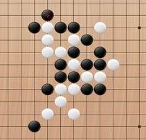

五子棋
#1 五子棋 作者：逆刃 发表时间：2008-3-28 13:07:30
本文转自大张平静的港湾http://blog.sina.com.cn/dazhangpingjing
<A target=_blank href="file:///C:/Documents%20and%20Settings/new/×ÃÃæ/1.BMP" target=_blank>
五子棋

最早接触五子棋是从初中开始的，当时只感觉这个游戏很简单，五个子连成一条线就可以了。
午休时和同学在黑板横横坚坚画上些线条，每人拿一支彩粉笔，于是开始战斗，没有硝烟，没有战术，只有爽朗的笑声。只因大家下棋水平都是彼此彼此，结果也是嘻嘻哈哈。
再后来上学就忙了，也无心去玩它!五子棋慢慢的消失在记忆里!
十年后，在街头一家小店，看到木盒子里静静躺着黑白棋子，一下子把我的记忆带回到学生时代，想起与同学刀光剑影杀上几个回合下棋的情景。。。。。
从这时起，下五子棋成为了我的最爱，和同事下，和朋友下，回到家时还和弟弟下，当所有人都不是我对手后，自感五子棋不过如此，其实真的很简单。
当网络出现时，我开始沉迷在网上下五子棋，自以为自己是高手，可真到这里时大受打击，终于明白了天外有天山外有山的道理，这里的真正的高手真多啊!自己的分数从0分降迅速降到负数。我哭的心都有了!
让我心静下来，开始研究五子棋战术的人是“孤星雪影”，别看他年龄比我小几岁，和他战了二十盘棋，我的成绩竟是0，心里很不服气，想继续下时，“孤星雪影”说：别下了，再下你还是输，好好练练吧，多输几盘就有经验了!多注意防手，别一味进攻，等有进步时再来找我。
呵呵，好酷酷的一个男孩子!
陪我练棋，进步最大的有两个人，至今我们都有联系，一位是“兄长”另一位是“铁板烧”。
兄长-----一位很亲切、开朗的兄长，在部队工作了二十多年的老军人，转业到郑州，暂时有充足的时间上网，棋技不如我，呵呵，刚开始下得很菜，当我与别人下棋战败时，总愿意找他下棋，因为只有和他下，才能满足我蠃棋的虚荣心。每次兄长输棋了，最多的是哈哈的笑声。
与兄长战了两个年头，兄长的棋技一天比一天好。渐渐的，我的棋技开始不如他了，现要蠃他一次，真得很吃力!
铁板烧----与我同龄，爱闹、好玩，热情、诚实的大男孩，在南京工作，棋技与我不分上下，和他下得棋最多，我们一有时间就研究棋，练习棋。
我们俩研究最多的问题，就是如何把自己的分数提高上去。终于有一天，我用Q币买了两张“一小时双倍积分卡”道具，在半个小时之内我俩疯狂刷分，一路刷到五子棋最高九段(900分)。看着自己九段最高分，我和他心里乐开了花，真有一种暴发户的感觉啊，我们俩再也不用担心在高分区里下棋，因为分数低被强迫踢出来了。这种高兴的心情没有几天就不高兴了，分数多也不是一件什么好事儿，和三、四段的棋友下棋时，盘盘输，最后被人家骂我作弊，刷分没水平!被陌生人在网上这样批评，我的心情当然好不了了，与铁板烧诉苦，呵呵，他与我的遭遇一样。
只因分数太高，下棋太差，高分区我再也不想去了。去低分区下棋，每次都有好多看棋的人，我若输棋那更尴尬。万般无奈，向老公求助，老公回答很简单：再申请一个QQ号吧，别再刷分了，真实水平才是最重要的。
现在兄长早已分到合适工作，每天忙得要死，很少上网下棋；铁板烧今年也当了爸爸，有了一个可爱的儿子；我每天忙忙碌碌，不知道在忙什么，偶而有时间了，就去QQ游戏里下下棋，细算一下，这几年别的游戏没玩，就玩这一个了。自己的棋技提高了不少。偶尔遇到有人输棋不走，非要和我下的，我就学当年“孤星雪影”的话：别下了，再下你还是输，好好练练吧，多输几盘就有经验了!哈。。。
如今我的棋即不是最棒的，但也不是最差的，成绩一段左右，博友若有爱好五子棋的，有机会了来两盘，切磋切磋，教我些新招，共同进步吧!
#2 Re:五子棋 作者：五子天下 发表时间：2008-3-29 9:18:49
呵呵我也一样啊~~#3 Re:五子棋 作者：落子伤 发表时间：2010-3-2 13:23:03
可不可以加你的Q呀？